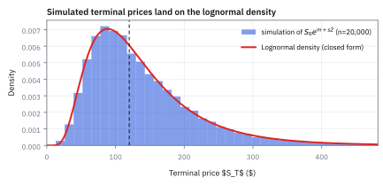
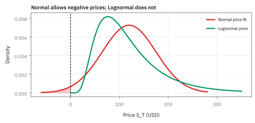

1.10 The Lognormal Distribution
ถ้า log ของราคาเป็น Normal ราคาจะเป็น Lognormal ซึ่งเป็นบวกเสมอ เบ้ไปทางขวา และมีค่าเฉลี่ยสูงกว่าค่ากลาง
หุ้นตัวหนึ่งราคา \$120 แบบจำลองของทีมวิจัยบอกว่าราคาคาดหวังปีหน้าคือ \$139.42 สูงกว่าวันนี้ 16% แต่แบบจำลองเดียวกันบอกว่าโอกาสที่ปีหน้าราคาจะสูงกว่า \$120 มีแค่ 49.9% ผู้จัดการกองทุนถามว่า “ราคาเฉลี่ยขึ้น แต่โอกาสขึ้นไม่ถึงครึ่ง ตัวเลขขัดกันเองหรือเปล่า”
ลองตอบก่อนเปิดเฉลย
ไม่ขัดกัน ราคาลงได้อย่างมากแค่ \$120 (ถึงศูนย์) แต่ขึ้นได้ไม่จำกัด เส้นทางที่ราคาพุ่งขึ้นสามสี่เท่าแม้มีน้อยก็ดึงค่าเฉลี่ยขึ้นไปมาก ส่วนโอกาสกำไรนับแค่ว่าราคาผ่าน \$120 หรือไม่ ไม่สนขนาด ในแบบจำลองนี้ราคากลาง (median) คือ \$119.85 ต่ำกว่า \$120 เล็กน้อย ขณะที่ค่าเฉลี่ยคือ \$139.42 หน้านี้จะคำนวณตัวเลขทั้งสองทีละขั้น
ภาพรวมก่อนลงสูตร
ราคาหุ้นโตแบบทบต้น ขึ้น 10% แล้วลง 10% ไม่ได้กลับมาที่เดิม เพราะผลตอบแทนคูณกัน ไม่ได้บวกกัน แต่ถ้าแปลงเป็น log return ผลคูณจะกลายเป็นผลบวก และผลบวกของการขยับเล็ก ๆ จำนวนมากก็คือสิ่งที่ทำให้เกิดเส้นระฆังตาม Normal distribution ข้อสมมติที่เป็นธรรมชาติจึงคือ log return เป็น Normal ซึ่งทำให้ราคาเป็น Lognormal
การแปลงกลับด้วย exponential บิดเส้นระฆังที่สมมาตรให้เบ้ขวา: ขยับ log return ลงหนึ่งก้าวทำให้ราคาลดไม่กี่ดอลลาร์ แต่ขยับขึ้นหนึ่งก้าวเท่ากันทำให้ราคาเพิ่มมากกว่า ผลคือราคาไม่มีวันติดลบ mean ลอยสูงกว่า median และมีเทอม “ลบครึ่ง variance” โผล่มาในทุกสูตรของแบบจำลองราคาหุ้น
หน้านี้จะเริ่มจากการทบต้น พิสูจน์ว่าเทอมครึ่ง variance มาจากไหน ตั้ง drift ให้ค่าเฉลี่ยตรงเป้า แล้วคำนวณ mean, median, mode, โอกาสข้ามเกณฑ์ราคา ช่วงราคา และ SD ของราคาสำหรับหุ้น \$120 ในโจทย์เปิด
รูป — ก้าวเท่ากันบนแกน log กลายเป็นก้าวไม่เท่ากันบนแกนราคา
ศัพท์ที่ใช้ในหน้านี้
- simple return, gross return, log return
- simple return คือ $S_T/S_0-1$ gross return คือ $S_T/S_0$ log return คือ $\ln(S_T/S_0)$ ตัวแรกใช้รายงานผล ตัวที่สองคูณข้ามช่วงเวลาได้ ตัวสุดท้ายบวกข้ามช่วงเวลาได้
- Lognormal
- distribution ของตัวแปรบวกที่ logarithm ของมันเป็น Normal ใช้เป็นแบบจำลองราคาสินทรัพย์ปลายช่วงเวลา และเป็นสมมติฐานของ Black–Scholes
- mean, median, mode
- mean คือค่าเฉลี่ยถ่วงด้วยโอกาส median คือค่าที่แบ่งโอกาสครึ่งต่อครึ่ง mode คือจุดที่ density สูงสุด ใน Lognormal ทั้งสามเรียงกัน mode < median < mean
- Jensen's inequality
- สำหรับ function ที่โค้งหงายอย่าง exponential ค่าเฉลี่ยของ function มากกว่า function ของค่าเฉลี่ย: $\mathbb E[e^R]\ge e^{\mathbb E[R]}$ ใช้อธิบายว่าทำไม exponentiate ค่าเฉลี่ย log return แล้วไม่ได้ราคาเฉลี่ย
- volatility drag
- ส่วนต่างระหว่างอัตราเติบโตของค่าเฉลี่ย ($\mu$) กับอัตราเติบโตของ median หรือผลตอบแทนทบต้น ($\mu-\sigma^2/2$) ใช้อธิบายว่าทำไมความผันผวนกัดกินผลตอบแทนทบต้น
สัญลักษณ์
| สัญลักษณ์ | ความหมาย | หน่วย |
|---|---|---|
| $S_0,\ S_T$ | ราคาวันนี้ และราคาที่เวลา $T$ | ดอลลาร์ |
| $T$ | ระยะเวลา | ปี |
| $R=\ln(S_T/S_0)$ | log return รวมทั้งช่วง | ไม่มีหน่วย |
| $m,\ s$ | ค่าเฉลี่ยและ SD ของ $R$ ทั้งช่วง | ไม่มีหน่วย |
| $\mu,\ \sigma$ | อัตราเติบโตของราคาเฉลี่ย และความผันผวนของ log return | ต่อปี, ต่อรากปี |
| $Z,\ \Phi$ | Normal มาตรฐาน และ CDF ของมัน |
ขั้นที่ 1 — ราคาคูณกัน แต่ log return บวกกัน
ก่อนจะสมมติ distribution ใด ต้องเห็นก่อนว่าทำไมการบวกผลตอบแทนตรง ๆ ใช้ไม่ได้ กองทุนหนึ่งได้ +20% ในปีแรกและ −10% ในปีที่สอง ค่าเฉลี่ยเลขคณิตคือ 5% ต่อปี แต่เงินโตจริงเท่าไร
สองปีเงินโต 8% รวม หรือ 3.92% ต่อปีแบบทบต้น ไม่ใช่ 5% ตัวเลข 5% เกินจริงเพราะการลง 10% เกิดบนฐานที่ใหญ่ขึ้นแล้ว log return แก้ปัญหานี้: มันบวกข้ามเวลาได้เป็นเอกลักษณ์ทางพีชคณิต ไม่ต้องสมมติอะไรเรื่อง distribution เลย ราคาปลายทางคือ $S_0$ คูณ $e$ ยกกำลังผลรวมของ log return รายช่วง ส่วนต่าง 5% กับ 3.92% จะกลับมาอีกครั้งในชื่อ volatility drag ในขั้นที่ 5
ขั้นที่ 2 — นิยาม Lognormal และการแปลงจาก Z เป็นราคา
log return รวมเป็นผลบวกของการขยับรายวันจำนวนมาก จึงสมเหตุผลที่จะสมมติว่ามันเป็น Normal เมื่อสมมติแล้ว ราคาปลายทางเขียนได้เป็น exponential ของ Normal ซึ่งคือนิยามของ Lognormal
$m$ และ $s$ คือค่าเฉลี่ยและ SD ของ log return ทั้งช่วง ไม่ใช่ของราคา สามแถวสุดท้ายคือจุดในรูปภาพรวม: $Z$ ที่ห่างกันเท่ากันให้ราคาที่ห่างกันไม่เท่ากัน (ลง 20.04 ขึ้น 24.47) และเพราะ $e^{(\cdot)}$ เป็นบวกเสมอ ราคาจึงไม่มีวันติดลบ ซึ่งตรงกับ limited liability ของผู้ถือหุ้น: เสียได้อย่างมากเท่าเงินที่ลงไป
ขั้นที่ 3 — ค่าเฉลี่ยของ exponential ไม่ใช่ exponential ของค่าเฉลี่ย
โจทย์ให้อะไรมาบ้าง: ก่อนใช้ Normal ลองแบบจำลองที่ง่ายที่สุด เริ่ม \$100 ทอยเหรียญยุติธรรมหนึ่งครั้ง ออกหัวราคาคูณสอง ออกก้อยราคาหารสอง log return จึงเป็น $+\ln2$ หรือ $-\ln2$ อย่างละครึ่ง ถามว่าราคาเฉลี่ยเป็นเท่าไร
คำตอบ: ราคาเฉลี่ยคือ \$125 ไม่ใช่ \$100 แม้ log return เฉลี่ยเป็นศูนย์ ฝั่งขึ้นได้ +\$100 ฝั่งลงเสีย −\$50 ความไม่สมมาตรนี้ดันค่าเฉลี่ยขึ้น ปรากฏการณ์นี้มีชื่อว่า Jensen's inequality: เพราะ exponential โค้งหงาย $\mathbb E[e^R]\ge e^{\mathbb E[R]}$ เสมอ และเท่ากันเฉพาะเมื่อ $R$ ไม่สุ่ม ถ้าอยากให้ราคาเฉลี่ยเป็น \$100 ต้องเลื่อน log return ทั้งสองกรณีลง $\ln(1.25)\approx0.223$
ตรวจเองใน 10 วินาที: ในเหรียญนี้ “log return เฉลี่ยศูนย์” แปลว่า median คือ \$100 (ครึ่งหนึ่งได้ 200 ครึ่งหนึ่งได้ 50) แต่ mean คือ \$125 สองตัวนี้แยกกันตั้งแต่โจทย์ที่ง่ายที่สุด
ขั้นที่ 4 — mean, median และ mode ของ Lognormal
ตอนนี้ทำแบบเดียวกับเหรียญ แต่ใช้ Normal เราต้องหาค่าเฉลี่ยของ $e^{sZ}$ ซึ่งคือ moment generating function ของ Normal มาตรฐานที่ได้มาจากการเติมกำลังสองใน Normal distribution: $\mathbb E[e^{aZ}]=e^{a^2/2}$
บรรทัดแรก: $S_0e^m$ เป็นค่าคงที่จึงดึงออกนอกค่าเฉลี่ยได้ (linearity จาก expected value) ที่เหลือคือ MGF ที่ $a=s$ ตัวคูณ $e^{s^2/2}$ คือ Jensen ในรูปตัวเลข บรรทัดที่สอง: median ของ $Z$ คือ 0 และ exponential เป็น function เพิ่ม ลำดับจึงไม่เปลี่ยน median ของราคาจึงคือ exponential ของ median ของ log return (median ผ่าน function เพิ่มได้ แต่ mean ผ่านไม่ได้) บรรทัดที่สามหาจุดยอดของ density ของราคา $f_S(x)=\frac{1}{xs\sqrt{2\pi}}e^{-(\ln(x/S_0)-m)^2/(2s^2)}$ ตัว $1/x$ ที่มาจากการเปลี่ยนตัวแปรดึง mode ลงต่ำกว่า median
ขั้นที่ 5 — ตั้ง drift ให้ราคาเฉลี่ยตรงเป้า: เทอมลบครึ่ง variance
ในทางปฏิบัติเรามักรู้หรือสมมติอัตราเติบโตของราคาเฉลี่ย เช่น “ราคาคาดหวังโต 15% ต่อปีแบบต่อเนื่อง” แล้วต้องหาค่า $m$ ที่ทำให้ได้ตามนั้น ถ้า log return รายช่วงอิสระกันและ variance ต่อปีคงที่ variance รวมจะโตตามเวลา $s^2=\sigma^2T$
สูตรบรรทัดที่สามคือราคาปลายทางของ geometric Brownian motion ซึ่งเป็นแบบจำลองราคาหุ้นมาตรฐาน ราคาเฉลี่ยโตในอัตรา $\mu$ แต่ median และผลตอบแทนทบต้นโตในอัตรา $\mu-\sigma^2/2$ ส่วนต่าง $\sigma^2/2$ คือ volatility drag ในกองทุน +20%/−10% ของขั้นที่ 1: variance ของผลตอบแทนสองปีคือ 0.0225 ครึ่งหนึ่งคือ 1.125% และ $5\%-1.125\%\approx3.9\%$ ใกล้ 3.92% ที่คำนวณได้จริง ถ้าตรึงราคาเฉลี่ยไว้แล้วเพิ่มความผันผวน median จะลดลงเรื่อย ๆ ตามรูปด้านล่าง
รูป — ตรึงราคาเฉลี่ยไว้ แล้วเพิ่มความผันผวน
ขั้นที่ 6 — โจทย์หลัก: หุ้น \$120 ปีหน้า
ใช้ $S_0=120$, $\mu=0.15$, $\sigma=0.55$ (ความผันผวนสูงแบบหุ้นเทคโนโลยีเติบโตเร็ว ตัวเลขสมมติ) และ $T=1$ ปี คำนวณ $m$ และ $s$ ก่อน แล้วแทนในสามสูตรของขั้นที่ 4 จากนั้นตอบคำถามโอกาสกำไร ซึ่งคือโอกาสที่ log return เป็นบวก
$m$ ติดลบเล็กน้อยเพราะ volatility drag ($0.3025/2=0.151$) กินอัตราเติบโต 0.15 จนหมด ราคากลางจึงต่ำกว่า \$120 นิดหนึ่ง และโอกาสกำไรจึงต่ำกว่าครึ่งนิดหนึ่ง ขณะที่ค่าเฉลี่ยสูงกว่าราคากลาง $e^{s^2/2}\approx1.163$ เท่า ตัวเลขทั้งหมดตอบคนละคำถามจึงไม่ขัดกัน ส่วน mode ที่ \$88.57 บอกว่าบริเวณที่ density หนาที่สุดอยู่ต่ำกว่าราคาวันนี้มาก ซึ่งเป็นภาพที่ผู้ถือหุ้นรายตัวควรรู้: ผลลัพธ์ “ทั่วไป” ของหุ้นผันผวนสูงแย่กว่าค่าเฉลี่ยมาก
รูป — density ของราคาปีหน้า พร้อม mode, median และ mean
ขั้นที่ 7 — โอกาสข้ามเกณฑ์ราคา และช่วงราคา 90%
คำถามทุกข้อเรื่องราคาแปลงเป็นคำถามของ $Z$ ได้ด้วยการใส่ log: logarithm เป็น function เพิ่ม ทิศของอสมการจึงไม่เปลี่ยน แล้วทำต่อแบบ Normal ส่วนการถามกลับทิศ (ราคาระดับไหนมีโอกาสต่ำกว่า 5%) ก็แก้สมการเดิมย้อนกลับ
ช่วงกลาง 90% ของราคาปีหน้าคือ \$48.50 ถึง \$296.16 ไม่สมมาตรรอบ \$120 เลย: ฝั่งล่างห่าง \$71 ฝั่งบนห่าง \$176 แต่บนแกน log มันสมมาตรพอดี (±1.645 คูณ 0.55) ตัวอย่างอีกคู่ที่ชวนพลาดคือ “ขึ้นเกิน 30%” กับ “ลงเกิน 30%” โอกาสคือ 31.59% และ 25.91% ไม่เท่ากัน เพราะ $\ln1.30=0.262$ แต่ $\ln0.70=-0.357$ การลง 30% ไกลกว่าการขึ้น 30% บนแกน log ช่วงนี้เป็นช่วงของราคาปลายปีเท่านั้น ไม่ได้บอกว่าระหว่างปีราคาจะอยู่ในช่วงนี้
ขั้นที่ 8 — SD ของราคา
ผู้จัดการความเสี่ยงอยากได้ความผันผวนของราคาเป็นดอลลาร์ ใช้ MGF เดิมที่ $a=2s$ เพื่อหาค่าเฉลี่ยของราคายกกำลังสอง แล้วลบกำลังสองของค่าเฉลี่ยตาม variance
บรรทัดที่สามคือสูตร variance ของ Lognormal แบบมาตรฐาน $e^{2m+s^2}(e^{s^2}-1)$ คูณ $S_0^2$ และเพราะ $2m+s^2=2\mu T$ จึงแทนได้ง่าย SD \$82.86 คือ 59.4% ของราคาเฉลี่ย สูงกว่า σ = 55% ของ log return เพราะการแปลงผ่าน exponential ขยายหางขวา เมื่อ σ เล็ก สองตัวนี้ใกล้กัน ($\sqrt{e^{s^2}-1}\approx s$) แต่ที่ความผันผวนสูงต้องแยกให้ออก
รูป — จำลองราคาปลายปี 20,000 ครั้งเทียบกับสูตร

ความผิดพลาดที่ให้คำตอบผิดแบบเงียบ ๆ
exponentiate ค่าเฉลี่ย log return แล้วเรียกว่าราคาเฉลี่ย: ในโจทย์หลัก $120e^{m}=\$119.85$ คือ median ไม่ใช่ mean (\$139.42) ผิดไป 14%
ใช้ μ เป็นอัตราเติบโตของ median: ถ้าคิดว่าราคากลางปีหน้าคือ $120e^{0.15}$ จะประเมินสูงไป \$19.57 เพราะลืม volatility drag ยิ่งความผันผวนสูง ยิ่งผิดมาก
สับสน σ ของ log return กับ SD ของราคา: σ = 55% ไม่ได้แปลว่า SD ของราคาคือ 55% ของ \$120 = \$66 ค่าจริงคือ \$82.86
ใช้ Normal กับราคาตรง ๆ: Normal ที่มี mean \$139.42 และ SD \$82.86 ให้โอกาสราคาติดลบราว 4.6% ซึ่งเป็นไปไม่ได้ Lognormal แก้เรื่องนี้ แต่ก็มีข้อจำกัดของตัวเอง: ไม่มีโอกาสเป็นก้อนที่ราคาศูนย์ จึงไม่จำลองการล้มละลาย ราคาจริงกระโดดได้ และผลตอบแทนจริงมีหางหนากว่า Lognormal ซึ่งเป็นเหตุผลหนึ่งที่ตลาด option มี volatility smile
ใช้ distribution ปลายทางตอบคำถามเรื่องเส้นทาง: สูตรในหน้านี้บอกราคา ณ วันสิ้นปี ไม่ได้บอกว่าระหว่างปีราคาจะแตะ stop-loss ที่ \$80 หรือไม่ คำถามแบบนั้นต้องใช้แบบจำลองเส้นทางอย่าง geometric Brownian motion
รูป — Normal บนราคา เทียบกับ Lognormal

ใช้ทำอะไรบนโต๊ะจริง
Lognormal คือสมมติฐานของราคาสินทรัพย์ปลายทางใน สูตร Black–Scholes และเป็นสิ่งที่ใช้จำลองราคาในการทำ Monte Carlo ใน การจำลอง SDE ข้อควรระวังสำคัญคือ μ ที่ใช้พยากรณ์ผลตอบแทน (มาตรวัดจริง) ไม่ใช่ drift ที่ใช้ตั้งราคา option ซึ่งต้องเปลี่ยนเป็นอัตราดอกเบี้ยไร้ความเสี่ยงตาม Girsanov และ risk-neutral measure อีกการใช้งานคือการรายงานผลกองทุน: ผลตอบแทนเฉลี่ยเลขคณิตสูงกว่าผลตอบแทนทบต้นราวครึ่งหนึ่งของ variance เสมอ กองทุนที่รายงานแต่ค่าเฉลี่ยเลขคณิตจึงดูดีเกินจริง
โจทย์ตรวจความเข้าใจ
1. ใช้ $S_0=120,\ \mu=0.15,\ \sigma=0.55$ เดิม แต่ถามราคาปลายปีที่สอง หา $m$, $s$, ราคาเฉลี่ย และ median
เฉลย
$m=(0.15-0.3025/2)\times2=-0.0025$ และ $s=0.55\sqrt2\approx0.7778$ ราคาเฉลี่ยคือ $120e^{0.15\times2}=120e^{0.30}\approx\$161.98$ ส่วน median คือ $120e^{-0.0025}\approx\$119.70$ ราคาเฉลี่ยโตต่อ แต่ median ทรงตัวเพราะ drift ของ log return ติดลบเล็กน้อย ช่องว่างระหว่างสองตัวกว้างขึ้นตามเวลา เพราะ $e^{s^2/2}$ โตตาม $T$
2. ถ้าต้องการให้ผลตอบแทนคาดหวังแบบ simple return เป็น 15% พอดี (ราคาเฉลี่ย \$138) ต้องใช้ μ เท่าไร และ median เป็นเท่าไร
เฉลย
ต้องการ $120e^{\mu}=138$ จึง $\mu=\ln1.15\approx0.1398$ แล้ว $m=0.1398-0.1513=-0.0115$ median คือ $120e^{-0.0115}$ หรือเท่ากับ $138e^{-0.3025/2}\approx\$118.63$ ตัวเลข μ = 15% ในโจทย์หลักให้ผลตอบแทนคาดหวังแบบ simple return $e^{0.15}-1=16.18\%$ ไม่ใช่ 15% ต้องอ่านให้ออกว่า μ เป็นอัตราต่อเนื่อง
3. กองทุนได้ผลตอบแทน +30% และ −20% ในสองปี หาค่าเฉลี่ยเลขคณิต ผลตอบแทนทบต้นต่อปี และตรวจด้วยค่าประมาณ volatility drag
เฉลย
เลขคณิต: $(30\%-20\%)/2=5\%$ ทบต้น: $1.30\times0.80=1.04$ จึงได้ $\sqrt{1.04}-1\approx1.98\%$ ต่อปี variance ของ $\{0.30,-0.20\}$ (หารด้วย 2) คือ 0.0625 ครึ่งหนึ่งคือ 3.125% และ $5\%-3.125\%\approx1.9\%$ ใกล้ 1.98% ค่าเฉลี่ยเลขคณิตเท่ากับกองทุน +20%/−10% ในขั้นที่ 1 แต่ความผันผวนสูงกว่าทำให้เงินโตช้ากว่าครึ่ง
คำนวณซ้ำด้วย JavaScript
เปิดดูโค้ด
const phi = z => Math.exp(-z * z / 2) / Math.sqrt(2 * Math.PI);
function Phi(z) {
const n = 10000, h = Math.abs(z) / n;
let s = 0;
for (let i = 0; i <= n; i++) s += (i === 0 || i === n ? 1 : i % 2 ? 4 : 2) * phi(i * h);
return 0.5 + Math.sign(z) * h * s / 3;
}
// compounding: +20% then -10%
console.log(1.2 * 0.9, Math.sqrt(1.2 * 0.9) - 1); // 1.08 0.0392
// main example
const S0 = 120, mu = 0.15, sigma = 0.55, T = 1;
const s2 = sigma ** 2 * T, s = Math.sqrt(s2), m = mu * T - s2 / 2;
const mean = S0 * Math.exp(m + s2 / 2), median = S0 * Math.exp(m), mode = S0 * Math.exp(m - s2);
console.log(m, mean, median, mode); // -0.00125 139.42 119.85 88.57
const below = K => Phi((Math.log(K / S0) - m) / s);
console.log(1 - below(120), below(100), 1 - below(160)); // 0.4991 0.3710 0.2997
console.log(1 - below(156), below(84)); // 0.3159 0.2591
const z95 = 1.644854;
console.log(S0 * Math.exp(m - s * z95), S0 * Math.exp(m + s * z95)); // 48.50 296.16
const variance = S0 ** 2 * Math.exp(2 * m + s2) * Math.expm1(s2);
console.log(variance, Math.sqrt(variance), Math.sqrt(Math.expm1(s2))); // 6866 82.86 0.594
// quick Monte Carlo check (Box-Muller normals)
let sum = 0, n = 200000;
for (let i = 0; i < n; i++) {
const z = Math.sqrt(-2 * Math.log(1 - Math.random())) * Math.cos(2 * Math.PI * Math.random());
sum += S0 * Math.exp(m + s * z);
}
console.log(sum / n); // close to 139.42สิ่งที่ควรตอบได้หลังอ่าน
- gross return คูณกัน log return บวกกัน: +20% แล้ว −10% ได้ 8% ใน 2 ปี หรือ 3.92% ต่อปี ไม่ใช่ 5%
- ถ้า $\ln(S_T/S_0)\sim N(m,s^2)$ ราคาเป็น Lognormal ซึ่งเป็นบวกเสมอ มี median $S_0e^m$ mean $S_0e^{m+s^2/2}$ และ mode $S_0e^{m-s^2}$
- ตัวคูณ $e^{s^2/2}$ มาจาก MGF ของ Normal และคือ Jensen's inequality ในรูปตัวเลข
- ตั้งราคาเฉลี่ยโตที่อัตรา μ ต้องใช้ $m=(\mu-\sigma^2/2)T$ ส่วนต่าง $\sigma^2/2$ คือ volatility drag
- หุ้น \$120 ที่ μ = 15%, σ = 55%: mean \$139.42, median \$119.85, mode \$88.57, โอกาสกำไร 49.9%, ช่วง 90% คือ \$48.50 ถึง \$296.16, SD \$82.86
Normal และ Lognormal ยังไม่พอสำหรับทุกงาน เวลารอที่ติดลบไม่ได้ ผลตอบแทนที่หางหนา และขนาดคำสั่งที่บางครั้งใหญ่ผิดปกติต้องใช้ distribution อื่น หน้าถัดไป สวนสัตว์ของ distribution จะพาไปรู้จัก Exponential, Student-t และ Pareto พร้อมวิธีเลือกใช้